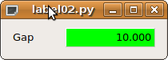
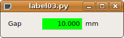
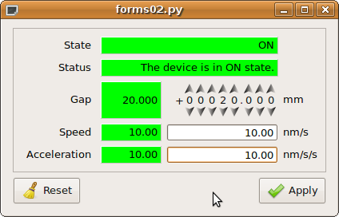
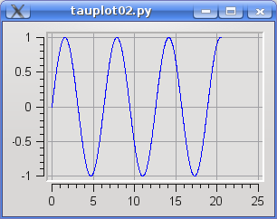
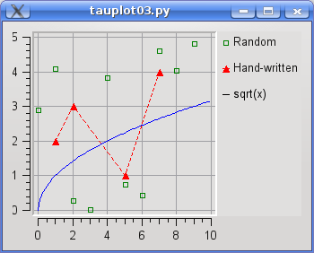

Examples¶
Here you will find a host of example figures with the code that generated them.
In order for the examples to work on your computer, you need to have a Tango device server running. The following section explains how to do this.
Setup¶
The device server used for the examples can be obtained here.
In order for the examples to work as they are provided a TaurusTest device must be created and running with the following configuration:
Server (ServerName/Instance):- TaurusTest/taurustest
Class:- TaurusTest
Devices:- sys/taurustest/1
You can easily configure it from Jive by going to Edit->Create server and type the above parameters in the dialog that pops up.
Common¶
For the sake of simplicity the code presented below (except for the first example) does not include the following header and footer code lines:
header:
1 2 3 4 5 6 7 8 | import sys
from taurus.external.qt import Qt
from taurus.qt.qtgui.application import TaurusApplication
app = TaurusApplication(sys.argv)
panel = Qt.QWidget()
layout = Qt.QHBoxLayout()
panel.setLayout(layout)
|
footer:
panel.show()
sys.exit(app.exec_())
You must prepend and append the above code in order for the examples to work properly.
Display attribute value¶
Displaying a tango attribute value in a GUI is easy with taurus and
display.TaurusLabel
code:
1 2 3 4 5 6 7 8 9 10 11 12 13 14 15 16 | import sys
from taurus.external.qt import Qt
from taurus.qt.qtgui.application import TaurusApplication
app = TaurusApplication(sys.argv)
panel = Qt.QWidget()
layout = Qt.QHBoxLayout()
panel.setLayout(layout)
from taurus.qt.qtgui.display import TaurusLabel
w = TaurusLabel()
layout.addWidget(w)
w.model = 'sys/taurustest/1/position'
panel.show()
sys.exit(app.exec_())
|
not much code to write, but... boring!
Display attribute value with label¶
Let’s spice it up a bit: add the tango label for the position attribute so it looks something like this:
code:
1 2 3 4 5 6 | from taurus.qt.qtgui.display import TaurusLabel
w1, w2 = TaurusLabel(), TaurusLabel()
layout.addWidget(w1)
layout.addWidget(w2)
w1.model, w1.bgRole = 'sys/taurustest/1/position#label', ''
w2.model = 'sys/taurustest/1/position'
|
Much better indeed!
Display attribute value with label and separate units¶
And little bit more... add the units.
code:
1 2 3 4 5 6 7 8 9 10 | from taurus.qt.qtgui.container import TaurusWidget
from taurus.qt.qtgui.display import TaurusLabel
w1, w2, w3 = TaurusLabel(), TaurusLabel(), TaurusLabel()
layout.addWidget(w1)
layout.addWidget(w2)
layout.addWidget(w3)
w1.model, w1.bgRole = 'sys/taurustest/1/position#label', ''
w2.model = 'sys/taurustest/1/position#rvalue.magnitude'
w3.model, w3.bgRole = 'sys/taurustest/1/position#rvalue.units', ''
|
Nice isn’t it?
Interactively display attribute¶
Humm... Now suppose the user wants to change this value. input.TaurusValueLineEdit
does this job well (and so does input.TaurusValueSpinBox and
input.TaurusWheelEdit 😃 )
With TaurusValueLineEdit
With TaurusValueSpinBox
With TaurusWheelEdit
code:
1 2 3 4 5 6 7 8 9 10 11 12 13 14 15 | from taurus.qt.qtgui.display import TaurusLabel
from taurus.qt.qtgui.input import TaurusValueLineEdit, TaurusValueSpinBox, TaurusWheelEdit
w1 = TaurusLabel()
w2 = TaurusLabel()
w3 = TaurusValueLineEdit() # or TaurusValueSpinBox or TaurusWheelEdit
w4 = TaurusLabel()
layout.addWidget(w1)
layout.addWidget(w2)
layout.addWidget(w3)
layout.addWidget(w4)
w1.model, w1.bgRole = 'sys/taurustest/1/position#label', ''
w2.model = 'sys/taurustest/1/position'
w3.model = 'sys/taurustest/1/position'
w4.model, w4.bgRole = 'sys/taurustest/1/position#rvalue.units', ''
|
Now it seems a little bit more useful, doesn’t it?
A higher level of abstraction: forms¶
Now let’s say you want to display not only one but a dozen attributes... the
programming becomes quite tedious. Taurus provides a higher level of
abstraction: the panel.TaurusForm.
code:
1 2 3 4 5 6 | from taurus.qt.qtgui.panel import TaurusForm
panel = TaurusForm()
props = [ 'state', 'status', 'position', 'velocity', 'acceleration' ]
model = [ 'sys/taurustest/1/%s' % p for p in props ]
panel.setModel(model)
|
...and don’t worry: panel.TaurusForm properly aligns the labels,
manages the apply buttons and most important, it automagically decides which are the most appropriate
widgets to use depending on the kind of attribute (you do not need to worry
about whether the attribute is a scalar or a spectrum; or if it is read-only or
writable; a boolean or a float, etc).
I specially enjoyed this one... let’s see what’s next!
Customizing forms¶
TaurusForm is highly customizable. This example shows how you can change the default widget for some attributes according to the user needs.
code:
1 2 3 4 5 6 7 8 9 | from taurus.qt.qtgui.panel import TaurusForm
from taurus.qt.qtgui.display import TaurusLabel
panel = TaurusForm()
props = [ 'state', 'status', 'position', 'velocity', 'acceleration' ]
model = [ 'sys/taurustest/1/%s' % p for p in props ]
panel.setModel(model)
panel[0].readWidgetClass = TaurusLabel # you can provide an arbitrary class...
panel[2].writeWidgetClass = 'TaurusWheelEdit' # ...or, if it is a Taurus class you can just give its name
|
A little configuration goes a long way!
Synoptics one-o-one¶
Todo
put a jdraw synoptics here
Let’s go graphical¶
Simple plotting of various spectrum attributes¶
Say you want to plot two SPECTRUM attributes and watch them changing on-line?
Taurus provides a very complete widget: plot.TaurusPlot
(which makes use of the PyQwt library) .
code:
from taurus.qt.qtgui.plot import TaurusPlot
panel = TaurusPlot()
model = ['sys/taurustest/1/abscissas', 'sys/taurustest/1/curve']
panel.setModel(model)
Scatter plots (Y vs X plots)¶
In the former example each element of the spectrum attributes, was assigned its position index as the x-value (i.e., the “abscissas” attribute was plotted as a spectrum). But, what if you want to create a scatter plot where you want to read the x values from one attribute and the y-values from another?
Solution: you use xValuesAttrName|yValuesAttrName as a member of the models list.
code:
from taurus.qt.qtgui.plot import TaurusPlot
panel = TaurusPlot()
model = ['sys/taurustest/1/abscissas|sys/taurustest/1/curve']
panel.setModel(model)
Note that now the sys/taurustest/1/abscissas attribute is being used as x-values instead of being considered as another spectrum to plot like before.
Plotting data that is not an attribute¶
You are not limited to plotting data from Tango attributes. With
plot.TaurusPlot you can also include arbitrary points (or even
functions) in the plot.
Oh, and you can can change the display properties of any curve:
code:
1 2 3 4 5 6 7 8 9 10 11 12 13 14 15 16 17 18 19 20 21 22 23 24 25 26 | import numpy
from taurus.qt import Qwt5
from taurus.qt.qtgui.plot import TaurusPlot, CurveAppearanceProperties
panel = TaurusPlot()
rawdata1 = {"y":5*numpy.random.random(10), "name":"Random"}
rawdata2 = {"x":[1, 2, 5, 7], "y":[2, 3, 1, 4], "name":"Hand-written"}
rawdata3 = {"x":numpy.arange(0,10,0.1), "f(x)":"sqrt(x)"}
p1 = CurveAppearanceProperties(sStyle=Qwt5.QwtSymbol.Rect,
sSize=5,
sColor="green",
sFill=False,
lStyle=Qt.Qt.NoPen)
p2 = CurveAppearanceProperties(sStyle=Qwt5.QwtSymbol.Triangle,
sSize=8,
sColor="red",
sFill=True,
lColor="red",
lStyle=Qt.Qt.DashLine)
panel.attachRawData(rawdata1, properties=p1)
panel.attachRawData(rawdata2, properties=p2)
panel.attachRawData(rawdata3)
|
...note the third curve: its definition is just a string defining a mathematical formula!
TaurusPlot knows maths!
Plotting Trends¶
Many times we are interested in showing how a scalar attribute evolves with
time. A close-cousin of the TaurusPlot called plot.TaurusTrend
is here to help you:
code:
1 2 3 4 5 6 | from taurus.qt.qtgui.plot import TaurusTrend
panel = TaurusTrend()
model = ['sys/taurustest/1/position']
panel.setXIsTime(True) #to show the x values as time
panel.setModel(model)
|
Note: if you pass a model that is a Tango SPECTRUM attribute (instead of a scalar), TaurusTrend will interpret it as a collection of scalar values and will plot a separate trend line for each.
Even higher level: creating a TaurusGui¶
taurusgui.TaurusGui provides very convenient way of creating
feature-rich and very configurable GUIs by using existing widgets as “panels”.
TaurusGuis can be created via a wizard application (no programming at all!) with
a few clicks. You can try it out by running:
taurusgui --new-gui
For more details and tricks regarding TaurusGui, check this.